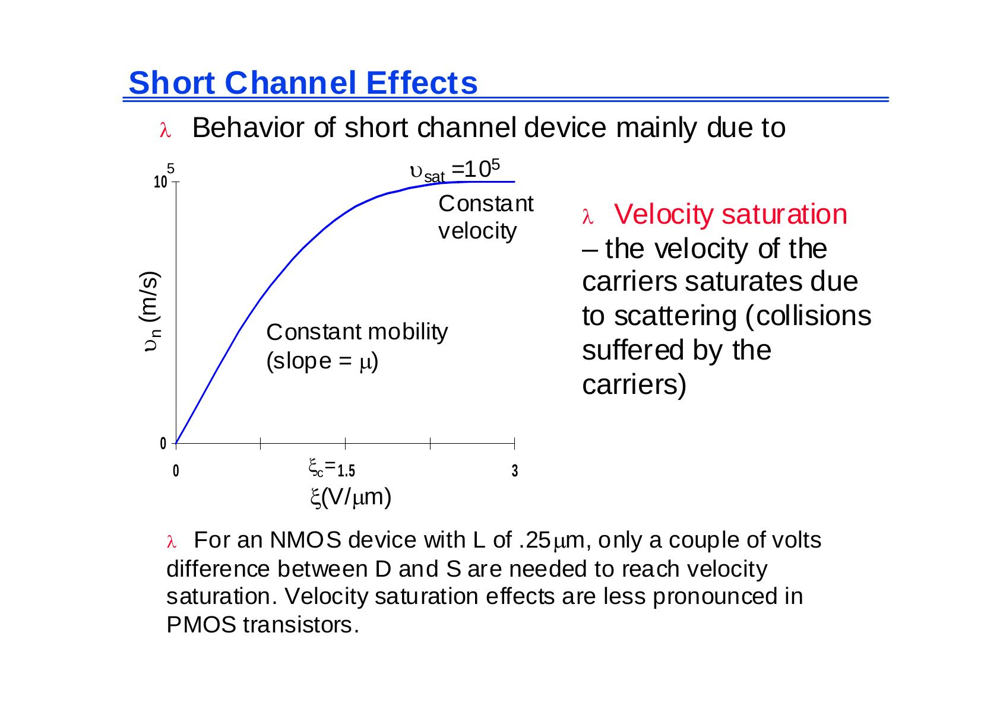
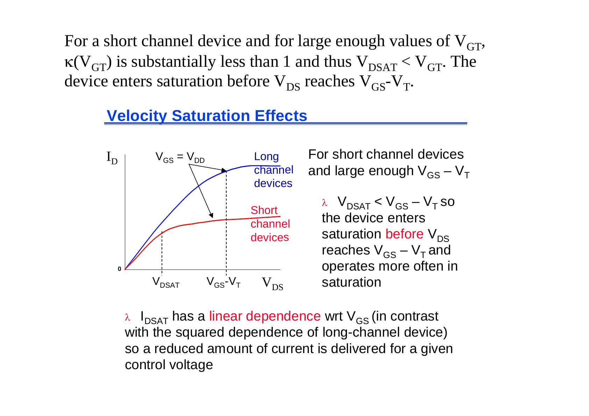
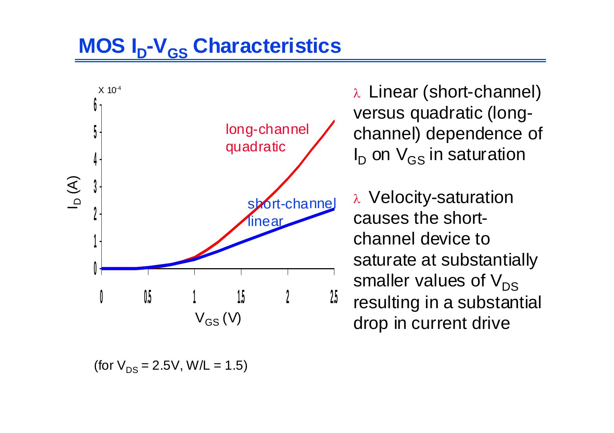
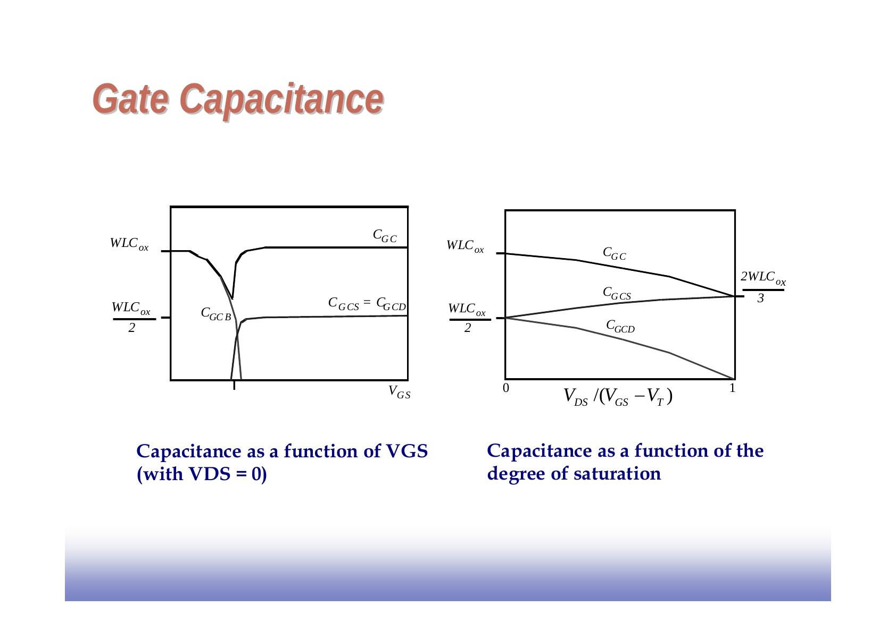
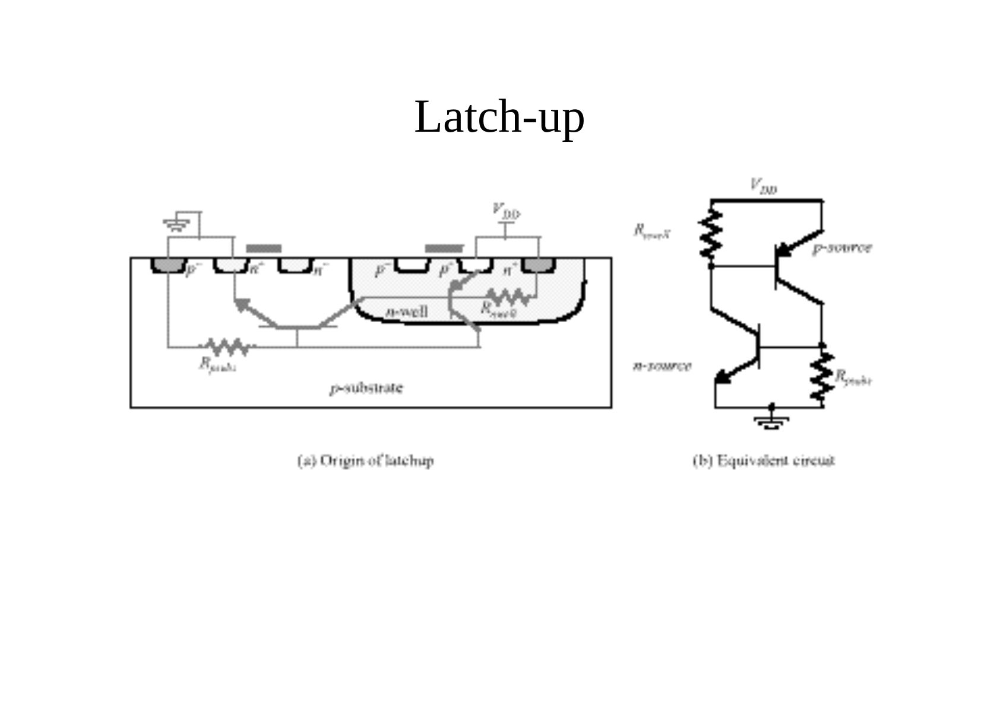

· EEM312
EEM312 Sayısal Elektronik: MOS Transistör – Akım Bağıntıları, Hız Doyumu, Sığalar (UC Berkeley EE141 slaytları, Jan Rabaey)
EEM312 – Sayısal Elektronik · 24.02.2006 · 16.10.2026
Bu yazı, Başkent Üniversitesi EEM312 Sayısal Elektronik dersinde Prof. Dr. Emin Akata'nın 2006 bahar döneminde dağıttığı 41 sayfalık MOS transistör sunumunu aktarıyor. Sunum büyük ölçüde Jan M. Rabaey'in UC Berkeley EE141 (Digital Integrated Circuits) ders slaytlarına dayanıyor; hocanın türetmeleri ve açıklamaları eklenmiş. Slaytlar İngilizce; içerik aşağıda Türkçe açıklamalarla ve formülleriyle yazıya döküldü. Orijinal PDF yazının sonunda indirilebilir. Serinin önceki bölümü: Diyot ve MOS Transistöre Giriş.
Bu içerik üçüncü taraf bir kaynağa aittir; arşiv ve nostalji amacıyla kaynak belirtilerek paylaşılmıştır. Hak sahibinin talebi hâlinde kaldırılır.
Uzun kanallı transistörde akım–gerilim bağıntısı
Doğrusal (rezistif) bölge (L > 0,25 µm, V_DS ≤ V_GS − V_T):
- I_D = k′_n (W/L)[(V_GS − V_T)V_DS − V_DS²/2]
- k′_n = µ_n C_ox = µ_n ε_ox/t_ox: süreç geçiş iletkenliği parametresi (µ_n taşıyıcı hareketliliği, m²/Vs); k_n = k′_n W/L: aygıtın kazanç çarpanı
- Küçük V_DS'de I_D ile V_DS arasında doğrusal ilişki vardır; bölgenin adı buradan gelir.
Doyum bölgesi (V_DS ≥ V_GS − V_T): yukarıdaki ifadede V_DS yerine V_GS − V_T konur:
- I_D′ = (k′_n/2)(W/L)(V_GS − V_T)²
- Kısılma (pinch-off) noktası ile source arasındaki gerilim V_GS − V_T'de sabit kaldığından I_D artık V_DS'ye bağlı değildir. Ancak iletken kanalın etkin uzunluğu V_DS ile değiştiğinden: I_D = I_D′(1 + λV_DS); λ kanal boyu modülasyonu katsayısıdır ve kanal boyuyla ters orantılıdır.
Doyumdaki transistör ideal bir akım kaynağı gibi davranır; ama V_DS arttıkça etkin kanal kısalır ve akım artar (L paydadadır). Kısa transistörlerde drain ekleminin boşaltılmış bölgesi kanalın daha büyük bir kısmını kapladığından kanal boyu modülasyonu daha belirgindir; yüksek empedanslı bir akım kaynağı gerekiyorsa uzun kanallı transistör seçmek önerilir.
Akımı belirleyenler (sabit V_DS ve V_GS > V_T için): source-drain uzaklığı L, kanal genişliği W, eşik gerilimi V_T, SiO₂ kalınlığı t_ox, gate yalıtkanının dielektrik sabiti ε_ox ve taşıyıcı hareketliliği (nFET için µ_n = 500 cm²/Vs, pFET için µ_p = 180 cm²/Vs).
Hız doyumu (velocity saturation)
Çok kısa kanallı transistörler rezistif ve doyum modellerinden belirgin biçimde sapar. Taşıyıcı hızı v_n = µ_n ξ(x) iken hareketlilik sabittir; ama yatay alan kritik bir ξ_c değerine ulaşınca çarpışmalar nedeniyle hız doyar. Bu koşul kısa kanallı aygıtlarda kolayca sağlanır.

L = 0,25 µm'lik bir NMOS'ta hız doyumuna ulaşmak için D ile S arasında yalnızca birkaç voltluk fark yeterlidir; PMOS'ta hız doyumu daha az belirgindir.
Yaklaşık hız eğrisi: v = µ_n ξ/(1 + ξ/ξ_c) (ξ ≤ ξ_c), v = v_sat (ξ ≥ ξ_c). Eğrinin v_sat'ta sürekli olması ξ_c = 2v_sat/µ_n gerektirir. Akım ifadesi bu hız ifadesiyle yeniden hesaplanınca:
- Doğrusal (V_DS ≤ V_GS − V_T): I_D = κ(V_DS) k′_n (W/L)[(V_GS − V_T)V_DS − V_DS²/2]
- κ(V) = 1/(1 + V/(ξ_c L)): hız doyumunun derecesinin ölçüsü
- Doyum (V_DS = V_DSAT): I_DSAT = κ(V_DSAT) k′_n (W/L)[(V_GS − V_T)V_DSAT − V_DSAT²/2]
- Uzun kanalda ya da küçük V_DS'de κ → 1; kısa kanalda κ < 1 ve beklenenden az akım verilir.
Rezistif bölgedeki dq(x) = −C_ox W dx[V_GS − V(x) − V_T] ifadesinden I(x) = C_ox W v_n(x)[V_GS − V(x) − V_T], doyumda I_DSAT = C_ox W v_sat [V_GS − V_DSAT − V_T]; bu iki ifade eşitlenince V_DSAT = κ(V_GT)V_GT, V_GT = V_GS − V_T.

Kısa kanallı aygıtta ve yeterince büyük V_GT'de κ(V_GT) 1'den belirgin biçimde küçüktür ve V_DSAT < V_GT olur: aygıt V_DS, V_GS − V_T'ye ulaşmadan doyuma girer ve daha çok doyumda çalışır. I_DSAT, V_GS'ye doğrusal bağlıdır (uzun kanaldaki karesel bağımlılığın aksine); belli bir kontrol gerilimi için daha az akım verilir. V_GS = V_DS = 2,5 V'ta kısa transistörün akımı uzun olanınkinin yalnızca %40'ı kadardır (220 µA'e karşı 540 µA).
PMOS'ta tüm gerilim ve akım işaretleri terstir (örnek: 0,25 µm PMOS, W/L = 1,5, V_DD = 2,5 V, V_T = −0,4 V; V_GS = −2,5 V'ta I_D ≈ −1 × 10⁻⁴ A).

Basitleştirilmiş model
Bulunan ifadeler el analizi için karmaşık olduğundan iki varsayım yapılır:
- Hız ξ_c'de birden doyar: v = µ_n ξ (ξ ≤ ξ_c), v = v_sat = µ_n ξ_c (ξ ≥ ξ_c).
- Kritik alanın oluştuğu V_DSAT sabittir (büyük V_GT için makul): V_DSAT ≈ Lξ_c = Lv_sat/µ_n.
V_DSAT = κ(V_GT)V_GT = [ξ_c L/(ξ_c L + V_GT)]V_GT ve büyük V_GT'de ≈ ξ_c L. Bu varsayımlarla rezistif bölge denklemleri uzun kanal modeliyle aynı kalır; V_DSAT'a ulaşılınca akım birden doyar:
- I_DSAT = µ_n C_ox (W/L)[(V_GS − V_T)V_DSAT − V_DSAT²/2], µ_n/L = v_sat/V_DSAT konunca
- I_DSAT = v_sat C_ox W (V_GS − V_T − V_DSAT/2)
Bu model gerçekten birinci derece ve deneyseldir; doğrusal ve hız doyumlu bölgeler arasındaki geçişte sapmalara yol açar.
Eşik altı iletim (subthreshold conductance)
V_GS < V_T iken iletimden kesime geçiş ani değil, kademelidir; akım hemen sıfıra düşmez, bipolar transistördeki gibi üstel olarak azalır. İletken kanal yokken source, bulk ve drain parazitik bir npn bipolar transistör oluşturur:
- I_D = I_S e^(qV_GS/(nkT)) (1 − e^(−qV_DS/(kT)))(1 + λV_DS); I_S ve n deneysel parametreler, n tipik olarak 1,5 civarı (≥ 1)
- Eğim çarpanı S = n(kT/q) ln(10): tipik 60 (n = 1) ile 100 mV/dekad
- Akımın azalma hızı sıcaklık artışından da etkilenir; eşik altı iletim dinamik devrelerde ve güç tüketiminde sorun yaratır.
Özet: akım bağıntıları
| Bölge | Koşul | I_D |
|---|---|---|
| Kesim | V_GS ≤ V_T | 0 |
| Triyot | V_GS > V_T, V_DS < V_GS − V_T | k_n[(V_GS − V_T)V_DS − V_DS²/2] |
| Doyum | V_GS > V_T, V_DS ≥ V_GS − V_T | (k_n/2)(V_GS − V_T)²(1 + λV_DS) |
| Hız doyumu | V_GS > V_T, V_DS ≥ V_DSAT, V_DSAT < V_GS − V_T | k_n[(V_GS − V_T)V_DSAT − V_DSAT²/2] ≈ v_sat C_ox W(V_GS − V_T − V_DSAT/2) |
k_n = k′_n W/L, k′_n = µ_n C_ox = µ_n ε_ox/t_ox, V_GT = V_GS − V_T.
Birleşik (unified) el analizi modeli
- I_D = 0 (V_GT ≤ 0)
- I_D = k′(W/L)[V_GT V_min − V_min²/2](1 + λV_DS) (V_GT ≥ 0), V_min = min(V_GT, V_DS, V_DSAT)
- V_T = V_T0 + γ(√|−2φ_F + V_SB| − √|−2φ_F|)
Model dört uçtaki gerilimlerle ve beş aygıt parametresiyle (V_T0, γ, V_DSAT, k′, λ) belirlenir. PMOS'ta bu parametrelerin hepsi negatiftir ve "min" yerine "max" kullanılır. Sayısal devrelerde aygıt çoğunlukla yüksek akım bölgesinde (V_GS = V_DS = V_DD) çalıştığından modelin bu bölgede iyi uyması önemlidir. 0,25 µm CMOS için:
| V_T0 (V) | γ (V^0,5) | V_DSAT (V) | k′ (A/V²) | λ (V⁻¹) | |
|---|---|---|---|---|---|
| NMOS | 0,43 | 0,4 | 0,63 | 115 × 10⁻⁶ | 0,06 |
| PMOS | −0,4 | −0,4 | −1 | −30 × 10⁻⁶ | −0,1 |
Sunumda basit modelin SPICE ile karşılaştırması da var: doğrusal, hız doyumlu ve doymuş bölgelerde iki eğri yakın; V_DS = V_DSAT ve V_DSAT = V_GT sınırları işaretli.
Kanal direnci ve anahtar modeli
Doğrusal bölgede drain-source direnci (kanal boyu modülasyonu ve hız doyumu ihmal):
- R_DS = (∂I_D/∂V_DS)⁻¹ = 1/[k_n(V_GS − V_T − V_DS)]; V_DS → V_GS − V_T iken R_DS → ∞
Doyumda (kanal boyu modülasyonu dahil, hız doyumu ihmal): R_DS = [λ(k_n/2)(V_GS − V_T)²]⁻¹ ≅ (λI_D)⁻¹ (sabit V_GS için).
Anahtar modeli: transistör, sonsuz kesim direnci ve sonlu R_on iletim direnci olan bir anahtar gibi modellenir. Direnç W/L ile ters orantılıdır (W'yi iki katına çıkarmak R_on'u yarıya indirir); V_DD ≫ V_T + V_DSAT/2 için R_on V_DD'den bağımsızdır; V_DD, V_T'ye yaklaştıkça R_on hızla artar. W/L = 1 için (V_GS = V_DD, V_DS: V_DD → V_DD/2):
| V_DD (V) | 1 | 1,5 | 2 | 2,5 |
|---|---|---|---|---|
| NMOS R_eq (kΩ) | 35 | 19 | 15 | 13 |
| PMOS R_eq (kΩ) | 115 | 55 | 38 | 31 |
Daha büyük aygıtlar için R_eq, W/L'ye bölünür.
R_on zamanla değişen, doğrusal olmayan ve çalışma noktasına bağlı bir büyüklüktür; geçişin uç noktalarındaki ortalama direnç R_eq iyi bir sabit yaklaşımdır:
- R_eq = 1/(t₂ − t₁) ∫ R_on(t) dt = 1/(t₂ − t₁) ∫ V_DS(t)/I_D(t) dt ≈ ½[R_on(t₁) + R_on(t₂)]
Yayılım gecikmesi tanımı gereği, bir sığanın V_DD'den V_DD/2'ye hız doyumundaki bir NMOS üzerinden boşalması alınırsa:
- R_eq = (3/4)(V_DD/I_DSAT)(1 − (7/9)λV_DD), I_DSAT = k′(W/L)[(V_DD − V_T)V_DSAT − V_DSAT²/2]
- Uç noktalardaki dirençlerin ortalaması alınıp Taylor açılımıyla sadeleştirilirse benzer sonuç: R_eq ≈ (3/4)(V_DD/I_DSAT)(1 − (5/6)λV_DD)
MOS sığaları
Örtüşme (overlap) sığası: yanal difüzyon x_d nedeniyle gate, source ve drain'in üzerine taşar (L_d = L − 2x_d): C_GSO = C_GDO = C_ox x_d W = C_o W.
Gate-kanal sığası bölgeye göre:
| Bölge | C_GCB | C_GCS | C_GCD | C_GC | C_G |
|---|---|---|---|---|---|
| Kesim | C_ox WL | 0 | 0 | C_ox WL | C_ox WL + 2C_o W |
| Rezistif | 0 | C_ox WL/2 | C_ox WL/2 | C_ox WL | C_ox WL + 2C_o W |
| Doyum | 0 | (2/3)C_ox WL | 0 | (2/3)C_ox WL | (2/3)C_ox WL + 2C_o W |
Sayısal tasarımda en önemli bölgeler doyum ve kesimdir.

Difüzyon sığası: source/drain bölgesinin taban (bottom) ve yan duvar (side wall) eklemlerinden oluşur:
- C_j = C_j0/(1 − V_D/φ₀)^m, C_sw = C′_sw x_j (W + 2L_s), C_jsw = C′_sw x_j
- C_diff = C_bottom + C_sw = C_j × alan + C_jsw × çevre = C_j L_s W + C_jsw(2L_s + W)
MOSFET sığa modeli: C_GS = C_GCS + C_GSO, C_GD = C_GCD + C_GDO, C_GB = C_GCB, C_SB = C_Sdiff, C_DB = C_Ddiff.
0,25 µm CMOS sürecindeki sığa parametreleri:
| C_ox (fF/µm²) | C_O (fF/µm) | C_j (fF/µm²) | m_j | φ_b (V) | C_jsw (fF/µm) | m_jsw | φ_bsw (V) | |
|---|---|---|---|---|---|---|---|---|
| NMOS | 6 | 0,31 | 2 | 0,5 | 0,9 | 0,28 | 0,44 | 0,9 |
| PMOS | 6 | 0,27 | 1,9 | 0,48 | 0,9 | 0,22 | 0,32 | 0,9 |
Parazitik dirençler: source ve drain bölgelerinin seri dirençleri R_S ve R_D; şekilde etkin gate gerilimi V_GS,eff ile drain kontağı–gate arasındaki L_D uzaklığı ve W gösteriliyor.
Hot-carrier etkileri, eşik değişimleri ve latch-up
Hot-carrier etkileri: kısa kanallı aygıtlarda zamanla kayma eğilimi. Aygıt boyutları sürekli küçülürken besleme ve çalışma gerilimleri aynı oranda küçülmemiştir; elektrik alan ve elektron hızı artar. Yüksek enerjili elektronlar gate oksidine girip orada tutulur; bu da eşik geriliminin artmasına (PMOS'ta azalmasına) yol açar ve uzun vadeli bir güvenilirlik sorunudur. Çözüm: elektrik alan tepelerini sınırlayan özel tasarlanmış drain ve source bölgeleri ve düşürülmüş besleme gerilimleri.
Eşik değişimleri: düşük V_DS'de eşik gerilimi kanal boyu kısaldıkça düşer (uzun kanal eşiğinden aşağı); kısa L'de V_DS arttıkça eşik düşer (drain-induced barrier lowering, DIBL). Veriye bağlı gürültü: eşik altı sızıntı akımı bit hattındaki veri örüntülerine bağlı hâle gelir.
Latch-up: son slaytta latch-up'ın kaynağı gösteriliyor: CMOS yapısında n-well ve p-alttaş içinde oluşan parazitik pnp ve npn transistörler (R_nwell ve R_psubs dirençleriyle) ve bunların eşdeğer devresi.
